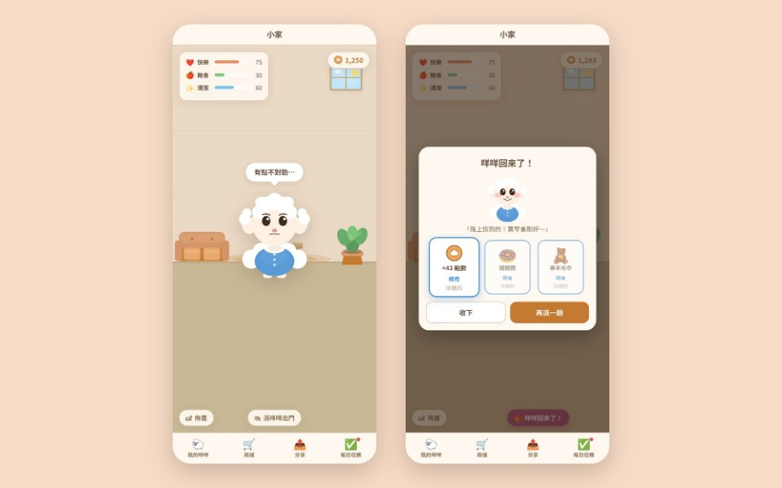

Selected work
-
 Game design, solo · 3 weeks
Game design, solo · 3 weeks
Longing for the Spring Breeze 望春風
A record-shop game set in Taiwan under martial law, where real regulations arrive each day.
-
 VR production, team of 2 · NTNU VR Lab
VR production, team of 2 · NTNU VR Lab
Exploring Cultural Heritage through VR
A virtual tour of more than 150 panoramas that preserves Taiwan's first brewery.
-
 Video production · 2023 - 2025
Video production · 2023 - 2025
Video work
Three short films about everyday life and culture in Taiwan, including a documentary I directed.
-

Game design, solo · DatamanaMeimei, a Pet Game
A mobile pet game for an e-commerce platform, from proposal to playable prototype.